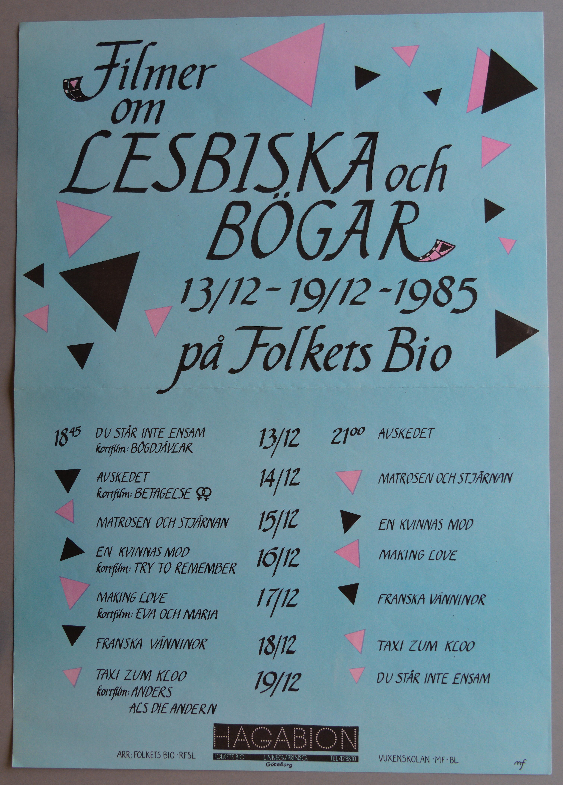
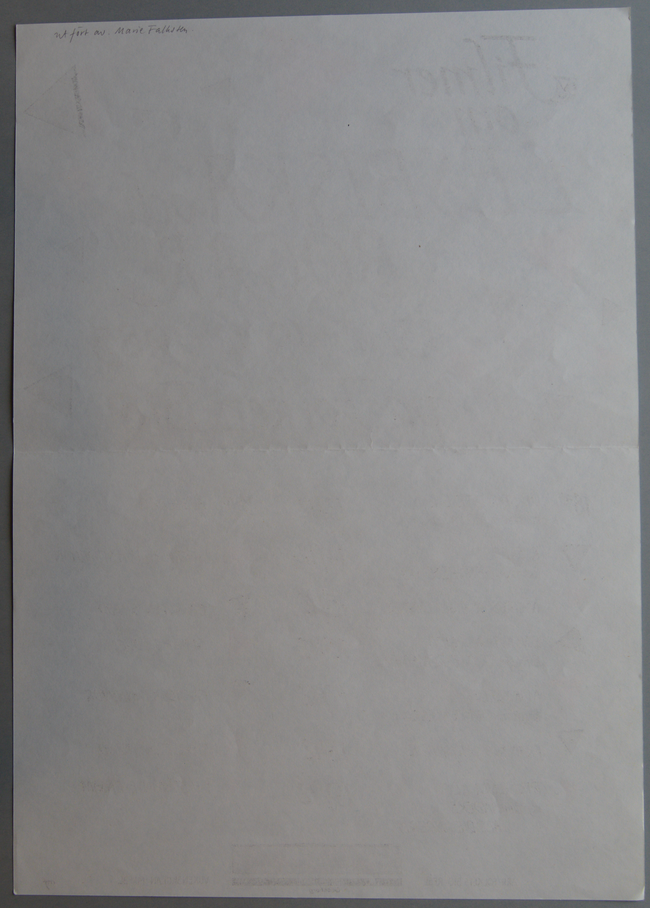

Digitiserad version av affisch från filmfestivalen "Filmer om LESBISKA
och BÖGAR" år 1985
Faksimil
Transkription
om
LESBISKA och
BÖGAR
13/12-19/12-1985
på Folkets Bio
18:45 DU STÅR INTE ENSAM
kortfilm:
BÖGDJÄVLAR
AVSKEDET
kortfilm: BETAGELSE
MATROSEN OCH STJÄRNAN
EN KVINNAS MOD
kortfilm: TRY TO
REMEMBER
MAKING LOVE
kortfilm: EVA OCH
MARIA
FRANSKA VÄNINNOR
TAXI ZUM KLOO
kortfilm: ANDERS
ALS DIE ANDERN
13/12
14/12
15/12
16/12
17/12
18/12
19/12
21:00 AVSKEDET
MATROSEN OCH STJÄRNAN
EN KVINNAS MOD
MAKING LOVE
FRANSKA VÄNINNOR
TAXI ZUM KLOO
DU STÅR INTE ENSAM
HAGABION
ARR; FOLKETS BIO • RFSL
FOLKETS BIO
LINNÉG./PRINSG.
TEL 428810
Göteborg
VUXENSKOLAN • MF • BL mf
Faksimil

Transkription
Utfört av. Marie Falksten.